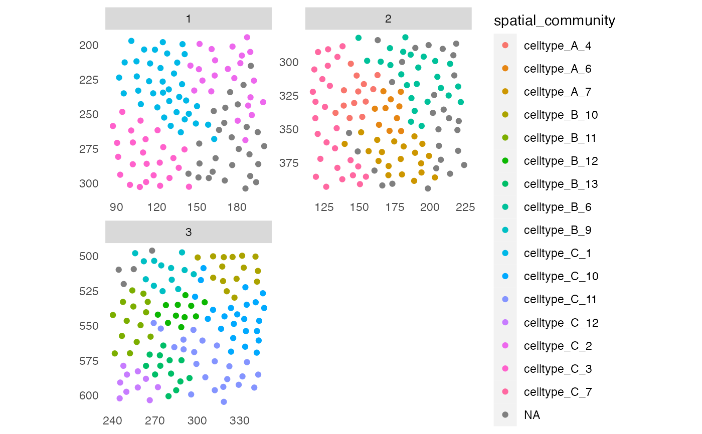

Function to detect the spatial community of each cell as proposed by Jackson et al., The single-cell pathology landscape of breast cancer, Nature, 2020. Each cell is clustered based on its interactions as defined by a spatial object graph.
detectCommunity(
object,
colPairName,
size_threshold = 0,
group_by = NULL,
name = "spatial_community",
cluster_fun = "louvain",
BPPARAM = SerialParam()
)a SingleCellExperiment or SpatialExperiment
object
single character indicating the colPair(object)
entry containing the neighbor information.
single positive numeric that specifies the minimum number of cells per community. Defaults to 0.
single character indicating that spatial community
detection will be performed separately for all unique entries to
colData(object)[,group_by].
single character specifying the name of the output saved in
colData(object). Defaults to "spatial_community".
single character specifying the function to use for
community detection. Options are all strings that contain the suffix of an
igraph community detection algorithm (e.g. "walktrap").
Defaults to "louvain".
a BiocParallelParam-class object
defining how to parallelize computations. Applicable when group_by is
specified and defaults to SerialParam().
For reproducibility between runs, we recommend defining RNGseed in the
BiocParallelParam-class object.
returns an object of class(object) containing a new column
entry to colData(object)[[name]].
1. Create an igraph object from the edge list stored in
colPair(object, colPairName).
2. Perform community detection using the specified cluster_fun algorithm.
3. Store the community IDs in a vector and replace all communities with
a size smaller than size_threshold by NA.
Optional steps: Specify group_by to perform spatial community
detection separately for all unique entries to colData(object)[,group_by]
e.g. for tumor and non-tumor cells.
library(cytomapper)
library(BiocParallel)
data(pancreasSCE)
sce <- buildSpatialGraph(pancreasSCE, img_id = "ImageNb",
type = "expansion",
name = "neighborhood",
threshold = 20)
#> The returned object is ordered by the 'ImageNb' entry.
## Detect spatial community
set.seed(22)
sce <- detectCommunity(sce,
colPairName = "neighborhood",
size_threshold = 10)
plotSpatial(sce,
img_id = "ImageNb",
node_color_by = "spatial_community",
scales = "free")
## Detect spatial community - specify group_by
sce <- detectCommunity(sce,
colPairName = "neighborhood",
group_by = "CellType",
size_threshold = 10,
BPPARAM = SerialParam(RNGseed = 22))
plotSpatial(sce,
img_id = "ImageNb",
node_color_by = "spatial_community",
scales = "free")
